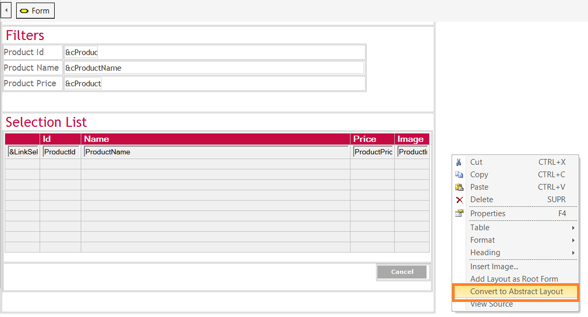
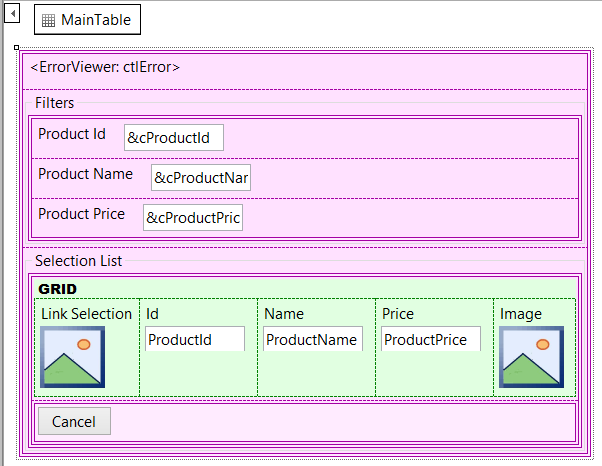

"Convert to Abstract Layout" is an option of the HTML Editor context menu. This option allows converting a form that has been designed using the HTML Editor to an Abstract layout. Its objective is to make the conversion to Responsive Web Design (RWD) applications more agile. Form controls are inserted in a Responsive Table, keeping the position and relation of the controls in the original form. ExampleConsider the following HTML form that we need to convert to an abstract form:  As a result of selecting the "Convert to Abstract Layout" menu option, the form is converted as follows:  After converting the form to abstract layout, you need to work on the distribution of the controls for the different screen sizes, using the Responsive Sizes property. The distribution given to the controls is the default for each screen size. For extra small screens, the information is stacked in a single column. For small, medium, and large screen sizes, horizontally displayed information is given an equal width. AvailabilityAs from GeneXus X Evolution 3 upgrade 5 Note:The Section Control is not converted. It does not keep the DIV tag, even if the content is copied to the abstract form.
|
| Backlinks |
| Add Layout as Root Form |